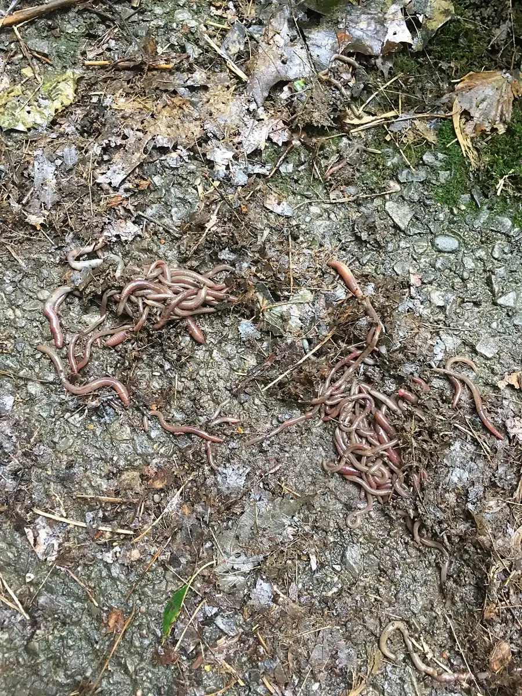

After-Rain Worm Count
After rain, the worms come up onto the path: the group counts them where they lie, steps carefully round them, and touches not one.
Ages 3–310–20 min2 materials
- Ages
- 3–3
- Group
- 2–12 kids
- Time
- 10–20 min
- Where
- Outdoors
- Prep
- ✅ No prep needed

Setup
The set-up is timing and scouting, and both are the adult's: worms come onto hard ground after rain, so this is a morning-after activity, taken when the weather offers it, not scheduled against it. Walk the path yourself first: there must be worms actually there to count, a wormless path is a walk, not a count, and note where they are thickest, so the group's careful feet are planned around real residents, not hoped-for ones. Soft ground beside the path is the stepping-aside place; check it is not a swamp.
Materials
- a paved path or playground edge on a morning just after rain (the adult has walked it first and found worms to count)
- no other materials, eyes and careful feet only
Steps
- Gather at the path's edge and say the plain true framing: 'Last night it rained. When it rains, worms come up out of the wet ground and onto the path. We are going to count how many came up on OUR path. And the rule that matters most. ' State it whole: 'We count with our eyes. Nobody touches a worm. Their skin is their breathing, and hands are too rough and too dry for them.' Said once, plainly, as care rather than warning.
- First worm together: walk the group to the first one you scouted, everyone stops a full step back, and the group looks properly, its length against a leaf, its slow way of moving, which end is going where, argued about with real interest. The count starts: 'One.' A worm counted is a worm greeted: 'Hello, worm one.' Three-year-olds who greet a resident do not step on it.
- Counting walk: the group moves along the path at worm pace, which is to say barely, stopping at every worm, 'Two... three...', with pointers counting from a step back and steppers stepping WIDE around every counted resident. A worm lying across the whole path stops the walk entirely: the group watches it cross, or the adult moves it gently on a wet leaf if it is truly stuck in harm's way, and the moving is watched as the skilled, kind exception it is.
- Thick-patch moment: where the worms are many, the count slows and the looking deepens, big ones, small ones, one coiled, one stretched to its full surprising length. Compare honestly in body words: 'That one is longer than my finger. That tiny one is a baby-sized worm.' Nobody's measure needs a ruler; the path is the chart.
- Finish at the path's end with the number told back whole: 'Eleven worms came up on our path after the rain.' Then the group leaves the path the way it came, stepping round the same residents, and the last word is the plain cycle said out loud: 'When the ground dries, they will go back down where it is safe and wet. The path is theirs until then.' A count that gets retold at lunch is data at this age, and it will be.
Variations
Easier: A three-worm path and a very small group: the whole count at one crouch, with the step-wide practised once around a worm the adult found first.
Harder: Count a second surface, the grass edge as well as the path: which ground had more worms after the same rain, and can the counters say by how many, in fingers if not in words?
⚠️ Safety
Nobody touches a worm, ever. The rule is the activity's spine, stated as the worm's need, not the children's fault: worm skin is delicate and dry hands harm it, full stop. Feet step wide and eyes watch the ground; the adult walks the route first so no worm is a surprise under a running foot, and walking, only walking, is the pace, because this path has residents. Hands that never touched a worm still wash back inside, as after any outdoor work; the path after rain holds more than worms, and the washing is routine, not alarm.
🤝 Inclusion notes
Counting is done by voice and pointing from wherever a counter is stationed: a counter watching from the path's edge, whose 'there. One more!' is called out and chalked into the group count by the adult, has counted that worm in full. The step-wide is done at every wheel's width too. The route is walked first by the adult precisely so its residents and its careful lines suit every traveller who will take it.
⭐ Tried this? Rate it
Your ratings live in this browser only. Nobody else can see them. There are no community ratings here; every star on this card is yours.
Rate this activity, add a note, or write a reflection
✏️ Quick reflection
Optional, saved with your rating, and exported with "📋 Copy my week".
Full activity card,